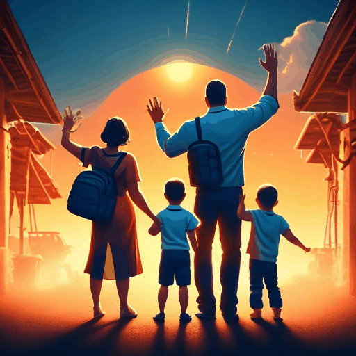
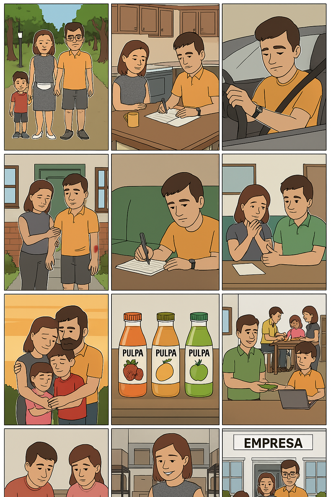

Inicio
Edgar Reyes y Yamile Ramírez siempre soñaron con una vida mejor.
Entre
sueños compartidos
 y noches en vela,
idearon una
empresa de pulpas de fruta,
convencidos de que, juntos, podrían transformar su destino.
y noches en vela,
idearon una
empresa de pulpas de fruta,
convencidos de que, juntos, podrían transformar su destino.
Con
dos hijos pequeños
 y muchas necesidades,
empezaron con lo poco que tenían: la fe en su
amor
y muchas necesidades,
empezaron con lo poco que tenían: la fe en su
amor
 y un deseo inquebrantable de salir adelante.
y un deseo inquebrantable de salir adelante.
Los Retos
Los desafíos no tardaron en llegar.
Un
intento de robo
 casi le cuesta la vida a Edgar.
Atrapado en su vehículo, sintió el frío de la muerte cerca. Mientras luchaba por sobrevivir, pensaba en Yamile y
en lo que ella tendría que enfrentar sola, al cuidado de sus hijos y de una empresa aún frágil.
casi le cuesta la vida a Edgar.
Atrapado en su vehículo, sintió el frío de la muerte cerca. Mientras luchaba por sobrevivir, pensaba en Yamile y
en lo que ella tendría que enfrentar sola, al cuidado de sus hijos y de una empresa aún frágil.
Pero Edgar resistió, y aunque herido, volvió a casa.
La Gran Pérdida
Poco después, una tragedia aún más dura golpeó sus esfuerzos:
cargamento perdido
 en el mar arrastró consigo 800 millones de pesos.
en el mar arrastró consigo 800 millones de pesos.
La desesperación los tocó, pero no los quebró el amor.
El Éxito
Con el tiempo, su pequeño sueño floreció. La empresa creció, sus hijos prosperaron, y ellos demostraron que, cuando se lucha en pareja, no hay adversidad que no se pueda vencer.
Lo que comenzaron con sueños, lo culminaron con éxito. Pero, sobre todo, con el poder de estar
juntos
 .
.
🌸 Nuestra Historia Visual


Más sobre sus sueños
Desde niños, soñaban con una vida sin carencias. Él quería ser empresario. Ella, independiente.
La empresa de pulpas
Empezaron vendiendo a pequeños mercados locales. Hoy, exportan a tres países.
La familia
Tienen dos hijos: Santiago y Emiliano, su inspiración diaria.
El asalto
Ocurrió una noche de invierno. Edgar defendió la mercancía, pero fue herido.
El cargamento perdido
Un error en la logística marítima provocó que el barco se desviara. Nunca recuperaron el producto.
El amor como refugio
Su relación se fortaleció con cada desafío. Las crisis unieron aún más su propósito.
Siempre juntos
Hoy siguen de la mano, con más sueños por cumplir.
El Lenguaje Sonoro en los Relatos Digitales
En los relatos digitales interactivos, el sonido no solo acompaña las imágenes, sino que también estructura la narrativa, crea atmósferas y potencia la inmersión. Gértrudix Barrio, Gértrudix Barrio y García (2017) analizan cómo el sonido se convierte en un recurso comunicativo y expresivo en contextos digitales.
Se identifican tres dimensiones fundamentales del lenguaje sonoro: la expresiva (emociones, ritmo, impacto), la informativa (función narrativa y contextual) y la estética (estilo, calidad sonora, coherencia con el mensaje). Estos elementos permiten al usuario no solo ver, sino también “sentir” y participar en la historia de forma activa.
En definitiva, el sonido se vuelve un componente clave en la experiencia transmedia, donde la narrativa digital se construye en múltiples plataformas con interacción y participación del público.
Fuente: Gértrudix Barrio, M., Gértrudix Barrio, F., & García García, F. (2017). El lenguaje sonoro en los relatos digitales interactivos. Cuadernos de Información y Comunicación, 22, 157–167. Acceder al artículo